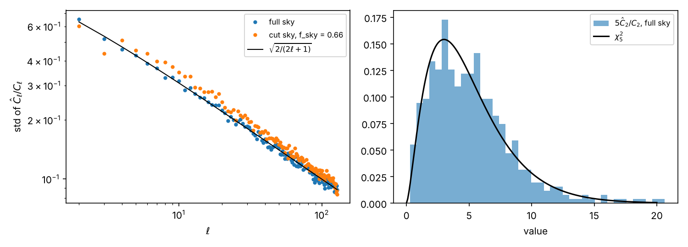
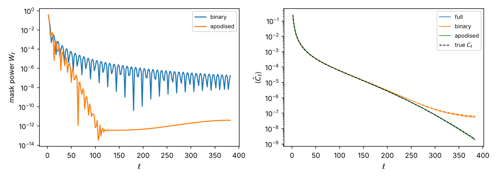

BASICOne story, from a line to the sky
Lessons 07 to 10 took a continuous signal, turned it into numbers and asked what we can compute from them. This lesson moves the same ideas onto the surface of a sphere. Almost every concept has a twin:
| on a line (07–10) | on the sphere (11) |
|---|---|
| sample every Δt | pixelise the sky (HEALPix pixels) |
| Fourier modes eiωt | spherical harmonics Yℓm(θ, φ) |
| frequency f | multipole ℓ (angular scale ≈ 180°/ℓ) |
| FFT, cost N log N | FFT on each ring + Legendre sum, cost L³ |
| periodogram | angular power spectrum Cℓ |
| Nyquist: ≥ 2 samples per period | ℓmax ≤ 2Nside; 2–3 pixels per beam FWHM |
| anti-aliasing filter before sampling | the telescope beam smooths before pixelising |
| finite record = window (leakage) | Galaxy mask = window on the sky |
COREPolar crowding
On a flat sheet you can draw equal squares and split each into 4 forever. On a sphere the obvious grid — equal steps in latitude and longitude, like a world map — crowds the poles: cells shrink to slivers.
th = np.radians(np.arange(1, 180, 2)) # cell centres, 2-degree grid
area = np.sin(th) * np.radians(2)**2 # solid angle of each cell
print(area.max() / area.min()) # ~57do i = 1, nth
th = (i - 0.5_dp)*dth
area(i) = sin(th)*dth*dphi ! cells shrink towards the poles
end doADVANCEDWhy no regular grid can be refined
On a sphere the angles of a polygon add up to more than on a plane, and the excess equals its area (Gauss–Bonnet on the unit sphere). So the shape of a regular cell fixes its size: you cannot shrink it and keep its shape. Only the 5 Platonic solids tile the sphere with identical regular cells; the finest (icosahedron) has 20 faces about 41° across — useless as a map. Euler's formula V − E + F = 2 forces defects: a sphere covered by hexagons always needs exactly 12 pentagons (look at a football).
Hint
1 / sin 10°.Full solution
1/0.1736 = 5.76.Hint
With P pentagons and H hexagons: F = P + H, E = (5P + 6H)/2, V = (5P + 6H)/3. Use V − E + F = 2.Full solution
V − E + F = P/6 = 2, so P = 12, whatever H.N = 7; phi = 2*np.pi*np.arange(N)/N
fk = np.fft.fft(np.cos(3*phi)) / N # 0.5 at k = 3 and k = -3 (index 4)do k = 0, N-1
fk(k) = sum(f*exp(-(0,1)*k*phi))/N
end doWorked numbers. f(φ) = cos 3φ has B = 3: it needs N ≥ 7 samples, every 360°/7 ≈ 51.4°. With 7 samples the DFT returns f̂±3 = 0.5 and zero elsewhere to machine precision. With 5 samples, k = 3 looks identical to k = 3 − 5 = −2.
Hint
B is the highest |k|.Full solution
B = 5, N ≥ 2·5 + 1 = 11.Hint
Subtract N.Full solution
5 − 8 = −3.from scipy.special import sph_harm_y # scipy >= 1.15: sph_harm_y(l, m, theta, phi)
Y = sph_harm_y(3, 2, theta, phi)! lambda_lm(theta) by the stable three-term recursion in l (see code lab)
lam(l) = sqrt((4*l*l-1.0_dp)/(l*l-m*m))*(x*lam(l-1) - c(l)*lam(l-2))m = hp.alm2map(alm, nside, lmax=lmax) # synthesis
alm = hp.map2alm(m, lmax=lmax, iter=3) # analysis! HEALPix Fortran 90: call alm2map(nside, lmax, mmax, alm, map)
! call map2alm(nside, lmax, mmax, map, alm, zbounds, w8ring)Counting. With ℓmax = 2: 1 + 3 + 5 = 9 = L² coefficients (L = ℓmax + 1). With ℓmax = 2048, L² ≈ 4.2 million numbers describe the map. Scales. ℓ = 2 (quadrupole): 90°, a quarter of the sky. ℓ = 220: ≈ 0.8°, the first acoustic peak of the CMB — spots about twice the Moon's diameter.
Hint
Σ (2ℓ + 1) for ℓ = 0 … 5.Full solution
(ℓmax + 1)² = 36.Hint
180°/ℓ.Full solution
0.82°.cl = hp.anafast(m, lmax=lmax) # = hp.alm2cl(hp.map2alm(m, lmax))cl(l) = (abs(alm(l,0))**2 + 2*sum(abs(alm(l,1:l))**2)) / (2*l+1)err = np.sqrt(2 / ((2*ell + 1) * fsky * dl)) # relative error of a binerr = sqrt(2.0_dp/((2*l+1)*fsky*dl))By hand. a1,0 = 2, a1,1 = 1 + i, a1,−1 = −(1 − i): |a|² = 4, 2, 2, so Ĉ1 = 8/3 ≈ 2.67.
Hint
√(2/5).Full solution
0.63: 63%.Hint
√(2/(441 · 0.778 · 30)).Full solution
√(2/10293) = 0.014: 1.4%.Hint
220 · 221 · 0.74 / 2π.Full solution
≈ 5727 µK², the first peak.| scheme | points needed | weak point |
|---|---|---|
| Driscoll & Healy (1994), equiangular | 4L² | polar crowding |
| Gauss–Legendre (rings at roots of PL) | ≈ 2L² | unequal areas, no hierarchy |
| McEwen & Wiaux (2011) | ≈ 2L² | unequal areas |
| HEALPix, ℓmax = 3Nside − 1 (not exact) | ≈ 1.33L² | approximate quadrature |
For L = 100: Driscoll–Healy 40 000 samples, Gauss–Legendre 19 900, HEALPix ≈ 13 300 — fewer samples, but the round trip is no longer exact. For observations we still prefer equal-area pixels: detectors average over an area, noise per pixel is simpler, and we want a hierarchy.
npix = hp.nside2npix(1024) # 12 582 912
res = hp.nside2resol(1024, arcmin=True) # 3.44 arcminnpix = 12*nside**2
thpix = sqrt(4*pi/npix)*180/pi*60 ! arcminBy hand. Nside = 2: 48 pixels on 7 rings. Ring 1 has 4 pixels at z = 1 − 1/12 = 0.917 (θ = 23.6°); rings 2 … 6 have 8 each: 2·4 + 5·8 = 48 ✓. Nside = 1024 (the Lab 2 maps): 12 582 912 pixels of 3.44′.
CORERING and NESTED ordering
RING: ring by ring from north to south — each ring is a contiguous block, which is what the transform wants. NESTED: a quad-tree inside each base pixel; the children of pixel p are 4p … 4p + 3, good for neighbours and changing resolution. Pixel 5 at Nside = 1 has children 20–23 at Nside = 2, and 80–95 at Nside = 4. Planck archive files are NESTED; the Lab 2 files were converted to RING (hp.reorder).
Hint
12 Nside².Full solution
12 · 16384 = 196 608.Hint
4Nside − 1.Full solution
4095.Hint
58.6°/Nside, times 60.Full solution
58.6 · 60 / 2048 = 1.72′.F = np.fft.rfft(m[start:start + nr]) # step 1 on one RING-ordered ringplan = fftw_plan_dft_r2c_1d(nr, seg, F, FFTW_ESTIMATE)
call fftw_execute_dft_r2c(plan, seg, F) ! one ring (see ring_fft.f90)Azimuthal aliasing. A ring of nr pixels cannot tell m from m ± nr. The first polar ring has only 4 pixels, so e5iφ looks like eiφ there — one reason the HEALPix round trip is not exact.
alm = hp.map2alm(m, lmax=lmax, iter=3)do it = 1, niter
call alm2map(nside, lmax, lmax, alm, mback)
call map2alm(nside, lmax, lmax, m - mback, dalm, zb, w8)
alm = alm + dalm
end doHint
L⁴/L³.Full solution
2048 (the notes quote "about 2000").B = hp.gauss_beam(np.radians(13.08/60), lmax=lmax) # FWHM in RADIANS
ms = hp.smoothing(m, fwhm=np.radians(1.0))sig = fwhm_rad/sqrt(8*log(2.0_dp))
bl = exp(-0.5_dp*[(l*(l+1), l=0,lmax)]*sig**2)W = hp.pixwin(nside, lmax=lmax) # downloads a table; Lab 2 reads it from a file
m_pw = hp.alm2map(alm, nside, pixwin=True) # simulate pixel averaging! HEALPix F90: call pixel_window(pixlw, nside)The Planck 70 GHz beam, FWHM = 13.08′ = 0.003805 rad, σ = 0.001616 rad, σ² = 2.61×10⁻⁶. At ℓ = 515, ℓ(ℓ+1)σ² = 0.694 and Bℓ² = 0.50: half the power is gone. At ℓ = 800 (third peak) only 19% survives; at ℓ = 1328, 1%.
COREAliasing and choosing Nside
Sky power on scales smaller than the pixels folds back onto lower ℓ and biases Ĉℓ upwards — aliasing, as in Lesson 07. The cure is to smooth before pixelising, and the telescope does it for free if the pixels are small enough compared with the beam:
| FWHM in pixels | 1 | 1.5 | 2 | 2.5 | 3 | 4 |
|---|---|---|---|---|---|---|
| aliased power, 2Nside ≤ ℓ < 3Nside | 16% | 4.7% | 1.8% | 0.7% | 0.2% | <10⁻⁵ |
| aliased power, Nside ≤ ℓ < 2Nside | 1.3% | 0.06% | <10⁻⁵ | <10⁻⁵ | <10⁻⁵ | <10⁻⁵ |
A 1° beam: Nside = 64 gives 1.1 pixels per FWHM (aliasing), 128 gives 2.2 (the choice), 256 gives 4.4 (wasteful), 512 gives 8.7 (oversampled). Planck 70 GHz at Nside = 1024: 13.08′/3.44′ = 3.8 pixels. Each factor 2 in Nside costs 4× memory and ~8× transform time.
COREChanging the resolution: ud_grade
Degrading makes each new pixel the mean of its children: a top-hat of one new pixel, ~1 pixel per FWHM, which aliases. Measured 512 → 64: 2.7% (Nside ≤ ℓ < 2Nside) and 25% (2Nside ≤ ℓ < 3Nside); smoothed first to 3 × 55′ = 2.75°: 0.00% and 0.03%. Upgrading copies each pixel into its 4 children: more pixels, no new information, and fake power at high ℓ from the block edges.
m_lo = hp.ud_grade(hp.smoothing(m, fwhm=np.radians(3*0.92*2)), 32) # smooth, then degrade 64 -> 32Hint
exp(−ℓ(ℓ+1)σ²).Full solution
exp(−800·801·2.61×10⁻⁶) = exp(−1.67) = 0.19.Hint
θpix = 58.6°/Nside; try 1024 and 2048.Full solution
2048: θpix = 1.72′, 2.9 pixels per FWHM.cl_sky = (cl_map - N) / (B * W)**2cl_sky = (cl_map - noise)/(bl*wl)**2Why deconvolution fails at high ℓ. 70 GHz noise N = 3.3×10⁻³ µK² sr; at ℓ = 1500, Bℓ² = 0.0028. A 1% mistake in N (3.3×10⁻⁵) becomes 0.0118 µK² sr after the division, i.e. Dℓ ≈ 4×10³ µK² — while the CMB there is under 10³ µK². The error is bigger than the signal.
COREA mask is a window
Real maps are masked: we cut the Galaxy and bright sources and keep a fraction fsky < 1. Exactly like a finite time record:
cl_mask = hp.anafast(m * mask, lmax=lmax) / mask.mean()fsky = sum(mask)/npixalm_wf = hp.almxfl(hp.map2alm(m), C*B*W / (C*(B*W)**2 + N))Hint
0.01 N / B², then × ℓ(ℓ+1)/2π.Full solution
0.0118 × 1500·1501/2π ≈ 4.2×10³ µK².Hint
The kept fraction.Full solution
fsky = 0.778.Use ▶ Play the pipeline to walk through the steps in order, or click any node. Branch colours: data, theory (links back to the sections of this lesson), pipeline and extensions (links to the Lab 2 page), results. The numbers are those printed by the Lab 2 notebook.
THE LABORATORY · OPEN THE LAB PAGELab 2: each step block by block, with the notebook and its results# inside "11. Sampling on the Sphere/code" (pip install healpy: Linux, macOS, WSL or Colab)
python sphere_warmup.py
python beam_to_map.py # writes map_nside16.bin for the Fortran part
python cosmic_variance.py
python cut_sky.pygfortran -O2 ring_fft.f90 -I/usr/include -lfftw3 -o ring_fft
./ring_fft| script | printed result |
|---|---|
| warm-up: round trip at ℓmax = 2Nside | max error 2.5×10⁻⁴ (iter 0), 2.9×10⁻⁵ (1), 4.3×10⁻⁷ (3) |
| warm-up: smoothed / (B² × input) | 1.000 |
| beam_to_map: pixels per 1° FWHM | Nside 64: 1.1 · 128: 2.2 · 256: 4.4 · 512: 8.7 |
| beam_to_map: aliased power at Nside 128 | 0.94% without pre-smoothing, 0.00% with |
| beam_to_map: recovered/input at Nside 256, ℓ = 200–399 | 0.997 with Wℓ; 0.902 without; 1.029 with the wrong (continuous-pixel) window |
| ring_fft.f90 vs numpy, Nside = 16 | 63 rings, 3072 pixels, max difference 3.55×10⁻¹⁵ |
| cosmic_variance: std of Ĉℓ/Cℓ, ℓ = 10 | full 0.316 (theory 0.309); cut 0.349 (theory/√fsky 0.379) |
| cosmic_variance: KS test 5Ĉ2/C2 vs χ²5 | p = 0.33; cut sky couples ℓ and ℓ + 2 (r = +0.10) |
| cut_sky: ⟨Ĉℓ⟩/Cℓ at ℓ = 300–309 | full 0.98, binary mask 2.45 (leakage), apodised 0.96 |


"""Lesson 11 warm-up: healpy harmonic transforms, beams and pixel windows.
Synthesis is exact, analysis is a quadrature: check the round trip, the beam as a
multiplication in harmonic space, cosmic variance, and the HEALPix numbers.
Run: python3 sphere_warmup.py (needs numpy and healpy)"""
import numpy as np
import healpy as hp
np.random.seed(11)
nside, lmax = 128, 2 * 128 # lmax <= 2 Nside: accurate
ell = np.arange(lmax + 1)
cl = np.zeros(lmax + 1); cl[2:] = 1.0 / (ell[2:] * (ell[2:] + 1.0))
# 1. HEALPix numbers
print(f"Nside {nside}: Npix = {hp.nside2npix(nside)}, rings = {4*nside-1}, "
f"pixel = {hp.nside2resol(nside, arcmin=True):.1f} arcmin")
# 2. round trip: synthesis exact, analysis approximate (Jacobi iterations help)
alm = hp.synalm(cl, lmax=lmax, new=True) # random a_lm with spectrum C_l
m = hp.alm2map(alm, nside, lmax=lmax) # synthesis
for it in (0, 1, 3):
back = hp.map2alm(m, lmax=lmax, iter=it) # analysis
print(f"map2alm iter={it}: max|a - a_in| / max|a_in| = "
f"{np.abs(back - alm).max() / np.abs(alm).max():.1e}")
# 3. a beam is a multiplication by B_l in harmonic space
fwhm = np.radians(1.0)
bl = hp.gauss_beam(fwhm, lmax=lmax)
m_s = hp.smoothing(m, fwhm=fwhm, lmax=lmax) # map2alm -> * B_l -> alm2map
cl_s = hp.anafast(m_s, lmax=lmax)
k = slice(10, 200)
print(f"smoothed / input spectrum divided by B_l^2, l = 10-199: "
f"{np.mean(cl_s[k] / (bl[k]**2 * hp.alm2cl(alm)[k])):.3f}")
# 4. cosmic variance: scatter of C_l-hat / C_l over 200 skies
r = np.array([hp.alm2cl(hp.synalm(cl, lmax=30, new=True))[2:31] / cl[2:31] for _ in range(200)])
for L in (2, 10, 30):
print(f"l = {L:2d}: std(C_hat/C) = {r[:, L-2].std():.3f} theory sqrt(2/(2l+1)) = {np.sqrt(2/(2*L+1)):.3f}")
# 5. the Planck 70 GHz beam: how much power survives
s = np.radians(13.08 / 60) / np.sqrt(8 * np.log(2))
for L in (515, 800, 1328):
print(f"70 GHz beam: B_l^2 at l = {L}: {np.exp(-L*(L+1)*s*s):.3f}")! Exercise of Lecture 11, reference solution (Fortran): step 1 of the spherical harmonic transform,
! an FFT along each HEALPix ring, with FFTW. Reads map_nside16.bin (RING order, float64, written by
! beam_to_map.py), splits it into the 4 Nside - 1 rings with the ring lengths of the slides
! (4i in the caps, 4 Nside in the belt), and compares |F_m|, m = 0..4, with numpy (ring_fft_py.txt).
! Build: gfortran -O2 ring_fft.f90 -I/usr/include -lfftw3 -o ring_fft
program ring_fft
use, intrinsic :: iso_c_binding
use, intrinsic :: iso_fortran_env, only: dp => real64
implicit none
include 'fftw3.f03'
integer, parameter :: nside = 16, npix = 12*nside**2, nm = 5
real(dp) :: mp(npix), ref(nm, 4*nside - 3), err
real(C_DOUBLE), allocatable :: seg(:)
complex(C_DOUBLE_COMPLEX), allocatable :: F(:)
type(C_PTR) :: plan
integer :: u, i, nr, p0, k
open(newunit=u, file='map_nside16.bin', access='stream', form='unformatted', status='old')
read(u) mp; close(u)
open(newunit=u, file='ring_fft_py.txt', status='old', action='read')
read(u, *) ref; close(u)
p0 = 0; k = 0; err = 0
do i = 1, 4*nside - 1
nr = 4*min(i, nside, 4*nside - i) ! ring length: 4i, 4 Nside, mirror
allocate(seg(nr), F(nr/2 + 1))
plan = fftw_plan_dft_r2c_1d(nr, seg, F, FFTW_ESTIMATE)
seg = mp(p0+1:p0+nr)
call fftw_execute_dft_r2c(plan, seg, F)
if (nr/2 + 1 >= nm) then ! rings with at least nm coefficients
k = k + 1
err = max(err, maxval(abs(abs(F(1:nm)) - ref(:, k))))
end if
call fftw_destroy_plan(plan); deallocate(seg, F)
p0 = p0 + nr
end do
print '(a, i0, a, i0, a, i0)', 'Nside = ', nside, ': ', 4*nside - 1, ' rings, pixels read = ', p0
print '(a, i0, a, es9.2)', 'rings compared: ', k, '; max | |F_m|(FFTW) - |F_m|(numpy) | = ', err
end program ring_fft"""Exercise of Lecture 11, reference solution (Python): from a beam to a map.
1. Rule: Nside for a beam of FWHM = 1 deg (2-3 pixels per FWHM or more).
2. 'True' sky: C_l = 1/(l(l+1)), l >= 2, smoothed by the 1 deg beam, on Nside = 512.
3. Degrade to Nside = 128 and 256 with healpy.ud_grade, without and with pre-smoothing to
FWHM = 3 new pixels; aliased power in 2 Nside <= l < 3 Nside (same sky truncated at 3 Nside - 1).
4. Recover C_l on the chosen map: anafast / (B_l^2 W_l^2), W_l from simulations (average over the
sub-pixels, exactly as ud_grade does from Nside 512: up = 2); mean ratio to the input in bands,
against the cosmic variance; the same with the window of a continuous pixel (up = 8), wrong here.
5. Writes map_nside16.bin (RING order, float64) and its per-ring FFT moduli for the Fortran part.
"""
import numpy as np
import healpy as hp
FWHM = np.radians(1.0)
NHI = 512
LHI = 3 * NHI - 1
def res_arcmin(n):
return np.degrees(hp.nside2resol(n)) * 60
def pixwin_sim(nside, nreal=4, up=8):
"""W_l of ud_grade: white sky on Nside*up, averaged into Nside pixels."""
lmax = 3 * nside - 1
acc = np.zeros(lmax + 1)
for _ in range(nreal):
alm = hp.synalm(np.ones(lmax + 1), lmax=lmax, new=True)
lo = hp.ud_grade(hp.alm2map(alm, nside * up, lmax=lmax), nside)
acc += hp.alm2cl(hp.map2alm(lo, lmax=lmax, iter=3)) / hp.alm2cl(alm) / nreal
return np.sqrt(acc)
if __name__ == "__main__":
np.random.seed(2026)
print("1. pixels per FWHM for a 1 deg beam: " +
", ".join(f"Nside {n}: {60/res_arcmin(n):.1f}" for n in (64, 128, 256, 512)))
ell = np.arange(LHI + 1)
cl = np.zeros(LHI + 1); cl[2:] = 1 / (ell[2:] * (ell[2:] + 1.0))
bl = hp.gauss_beam(FWHM, lmax=LHI)
alm = hp.almxfl(hp.synalm(cl, lmax=LHI, new=True), bl)
sky = hp.alm2map(alm, NHI, lmax=LHI)
print(f"2. sky: Nside {NHI}, beam 1 deg; rms {sky.std():.4f}")
for ns in (128, 256):
lc = 3 * ns - 1
alm_t = hp.resize_alm(hp.resize_alm(alm, LHI, LHI, lc, lc), lc, lc, LHI, LHI)
for sm in (None, np.radians(3 * res_arcmin(ns) / 60)):
c = []
for a in (alm, alm_t):
m = hp.alm2map(a, NHI, lmax=LHI)
if sm is not None:
m = hp.smoothing(m, fwhm=sm, lmax=LHI)
c.append(hp.anafast(hp.ud_grade(m, ns), lmax=lc))
r = c[0] / c[1] - 1
lab = "no pre-smoothing" if sm is None else f"pre-smoothed to {np.degrees(sm)*60:.0f}'"
print(f"3. Nside {ns:3d}, {lab:24s}: aliased power {100*r[2*ns:3*ns].mean():6.2f}% (l = {2*ns}-{3*ns-1})")
ns = 256; lc = 2 * ns
w = pixwin_sim(ns, nreal=8, up=NHI // ns)[:lc + 1]
w8 = pixwin_sim(ns, nreal=8, up=8)[:lc + 1]
c_map = hp.anafast(hp.ud_grade(sky, ns), lmax=lc)
rec = c_map / (bl[:lc + 1]**2 * w**2)
for a, b in ((2, 50), (50, 200), (200, 400), (400, 512)):
sl = slice(a, b)
ratio = rec[sl] / cl[sl]
cv = np.sqrt(2 / (2 * ell[sl] + 1)).mean() / np.sqrt(b - a)
print(f"4. Nside {ns}, l = {a:3d}-{b-1:3d}: <C_l recovered / C_l input> = {ratio.mean():.3f} "
f"(cosmic variance of the band mean ~ {cv:.3f}); without W_l: {(c_map[sl]/(bl[sl]**2*cl[sl])).mean():.3f}; "
f"with the continuous-pixel W_l: {(c_map[sl]/(bl[sl]**2*w8[sl]**2*cl[sl])).mean():.3f}; B_l^2 at l = {b-1}: {bl[b-1]**2:.1e}")
n16 = 16
m16 = hp.ud_grade(sky, n16)
m16.astype("<f8").tofile("map_nside16.bin")
th, _ = hp.pix2ang(n16, np.arange(12 * n16**2))
start, out = 0, []
while start < m16.size:
n = np.sum(np.isclose(th, th[start], atol=1e-14, rtol=0))
out.append(np.abs(np.fft.rfft(m16[start:start + n]))[:5])
start += n
np.savetxt("ring_fft_py.txt", np.array([o[:5] for o in out if len(o) >= 5]), fmt="%.17e")
print(f"5. Nside {n16} map written; per-ring |FFT| (m = 0..4) of the {len(out)} rings saved "
f"(rings with at least 5 coefficients: {sum(len(o) >= 5 for o in out)})")"""Lecture 11, exercise 2 (reference solution): cosmic variance on a full and on a cut sky.
Sky C_l = 1/(l(l+1)), Nside = 64, l_max = 128, 500 Gaussian realisations (healpy.synfast).
Mask: Galactic band |b| < 20 deg removed (f_sky = 0.66). Naive cut-sky estimate: anafast of the
masked map divided by f_sky.
1. full sky: mean and scatter of C_l-hat / C_l against 1 and sqrt(2/(2l+1));
(2l+1) C_2-hat / C_2 against chi^2_5 (Kolmogorov-Smirnov).
2. cut sky: the same; scatter per multipole and in bins of 10 against sqrt(2/((2l+1) f_sky dl)).
3. correlation between C_l-hat and C_{l+1}, C_{l+2}, C_{l+3}-hat: zero on the full sky; on the cut sky
only l+2 (the band mask is symmetric about the equator: it couples multipoles of equal parity).
Output: cosmic_variance.out, cosmic_variance.png
"""
import numpy as np
import healpy as hp
from scipy import stats
import matplotlib; matplotlib.use("Agg")
import matplotlib.pyplot as plt
NSIDE, LMAX, NREAL, DL = 64, 128, 500, 10
rng_seed = 11
if __name__ == "__main__":
np.random.seed(rng_seed)
ell = np.arange(LMAX + 1)
cl = np.zeros(LMAX + 1); cl[2:] = 1.0 / (ell[2:] * (ell[2:] + 1.0))
theta, _ = hp.pix2ang(NSIDE, np.arange(hp.nside2npix(NSIDE)))
mask = (np.abs(np.degrees(np.pi / 2 - theta)) > 20).astype(float)
fsky = mask.mean()
full = np.empty((NREAL, LMAX + 1)); cut = np.empty((NREAL, LMAX + 1))
for i in range(NREAL):
m = hp.synfast(cl, NSIDE, lmax=LMAX, new=True)
full[i] = hp.anafast(m, lmax=LMAX)
cut[i] = hp.anafast(m * mask, lmax=LMAX) / fsky
full[:, 2:] /= cl[2:]; cut[:, 2:] /= cl[2:]
print(f"Nside = {NSIDE}, l_max = {LMAX}, {NREAL} realisations; mask |b| < 20 deg, f_sky = {fsky:.3f}")
print(" l <C>/C full cut std full (theory) std cut (theory/sqrt(f_sky))")
for L in (2, 3, 5, 10, 30, 100):
th = np.sqrt(2 / (2 * L + 1))
print(f"{L:3d} {full[:, L].mean():6.3f} {cut[:, L].mean():6.3f} {full[:, L].std():6.3f} ({th:5.3f})"
f" {cut[:, L].std():6.3f} ({th/np.sqrt(fsky):5.3f})")
p = stats.kstest(5 * full[:, 2], "chi2", args=(5,)).pvalue
print(f"(2l+1) C_2-hat / C_2 against chi^2_5: KS p-value = {p:.2f}")
print(f"bins of {DL}: std of the bin mean")
for l0 in (20, 50, 100):
lc = l0 + (DL - 1) / 2; th = np.sqrt(2 / ((2 * lc + 1) * DL))
print(f" l = {l0}-{l0+DL-1}: full {full[:, l0:l0+DL].mean(1).std():.4f} ({th:.4f}),"
f" cut {cut[:, l0:l0+DL].mean(1).std():.4f} ({th/np.sqrt(fsky):.4f})")
print("correlation of C_l-hat with C_{l+1}-hat and C_{l+2}-hat, averaged over l = 10-100"
f" (noise of one coefficient ~ 1/sqrt({NREAL}) = {1/np.sqrt(NREAL):.3f})")
for name, a in (("full", full), ("cut", cut)):
r = [np.mean([np.corrcoef(a[:, L], a[:, L + d])[0, 1] for L in range(10, 101)]) for d in (1, 2, 3)]
print(f" {name:4s}: l+1 {r[0]:+.3f}, l+2 {r[1]:+.3f}, l+3 {r[2]:+.3f}")
fig, ax = plt.subplots(1, 2, figsize=(10, 3.6))
ax[0].plot(ell[2:], full[:, 2:].std(0), ".", label="full sky")
ax[0].plot(ell[2:], cut[:, 2:].std(0), ".", label=f"cut sky, f_sky = {fsky:.2f}")
ax[0].plot(ell[2:], np.sqrt(2 / (2 * ell[2:] + 1)), "k-", lw=1, label=r"$\sqrt{2/(2\ell+1)}$")
ax[0].set_xscale("log"); ax[0].set_yscale("log"); ax[0].set_xlabel(r"$\ell$")
ax[0].set_ylabel(r"std of $\hat C_\ell/C_\ell$"); ax[0].legend(fontsize=8)
x = np.linspace(0, 20, 200)
ax[1].hist(5 * full[:, 2], bins=40, density=True, alpha=0.6, label=r"$5\hat C_2/C_2$, full sky")
ax[1].plot(x, stats.chi2.pdf(x, 5), "k-", label=r"$\chi^2_5$")
ax[1].set_xlabel("value"); ax[1].legend(fontsize=8)
plt.tight_layout(); plt.savefig("cosmic_variance.png", dpi=150)"""Lecture 11, exercise 3 (reference solution): a mask is a window.
Sky C_l = B_l^2 / l^2 (Gaussian beam FWHM = 1 deg: a spectrum that falls by 10^-4 over the band),
Nside = 128, l_max = 3 Nside - 1, 50 realisations.
Masks: binary |b| > 20 deg; apodised = binary shrunk to |b| > 25 deg, smoothed with a 5 deg Gaussian.
1. power spectrum of the two masks (anafast of w): how fast it falls with l;
2. naive estimate anafast(w m) / <w^2> divided by the true C_l, in bins of 10, for full sky,
binary and apodised masks: leakage from large to small scales;
3. the price: effective sky fraction <w^2>^2/<w^4> (number of modes) for the two masks.
Output: cut_sky.out, cut_sky.png
"""
import numpy as np
import healpy as hp
import matplotlib; matplotlib.use("Agg")
import matplotlib.pyplot as plt
NSIDE, NREAL, DL = 128, 50, 10
LMAX = 3 * NSIDE - 1
if __name__ == "__main__":
np.random.seed(12)
ell = np.arange(LMAX + 1)
bl = hp.gauss_beam(np.radians(1.0), lmax=LMAX)
cl = np.zeros(LMAX + 1); cl[2:] = bl[2:]**2 / ell[2:]**2
theta, _ = hp.pix2ang(NSIDE, np.arange(hp.nside2npix(NSIDE)))
b = np.degrees(np.pi / 2 - theta)
masks = {"full": np.ones_like(b),
"binary": (np.abs(b) > 20).astype(float),
"apodised": np.clip(hp.smoothing((np.abs(b) > 25).astype(float), fwhm=np.radians(5)), 0, 1)}
print(f"Nside = {NSIDE}, l_max = {LMAX}, sky C_l = B_l^2/l^2 (FWHM 1 deg), {NREAL} realisations")
print(f"C_l falls by {cl[2]/cl[300]:.1e} from l = 2 to l = 300")
for k, w in masks.items():
if k == "full": continue
print(f"mask {k:9s}: f_sky = <w> = {w.mean():.3f}, <w^2> = {np.mean(w**2):.3f},"
f" effective f_sky <w^2>^2/<w^4> = {np.mean(w**2)**2/np.mean(w**4):.3f}")
wl = {k: hp.anafast(w, lmax=LMAX) for k, w in masks.items() if k != "full"}
print("mask power spectrum W_l (even l; odd l vanish for this symmetric mask):")
for L in (10, 50, 100, 200, 300):
print(f" l = {L:3d}: binary {wl['binary'][L]:.1e}, apodised {wl['apodised'][L]:.1e}")
est = {k: np.zeros(LMAX + 1) for k in masks}
for _ in range(NREAL):
m = hp.synfast(cl, NSIDE, lmax=LMAX, new=True)
for k, w in masks.items():
est[k] += hp.anafast(w * m, lmax=LMAX) / np.mean(w**2) / NREAL
print(f"<C_l-hat>/C_l in bins of {DL} (naive estimate: anafast(w m)/<w^2>)")
print(" bin full binary apodised")
for l0 in (2, 10, 20, 50, 100, 150, 200, 250, 300, 350):
sl = slice(l0, l0 + DL)
r = [np.mean(est[k][sl]) / np.mean(cl[sl]) for k in masks]
print(f" {l0:3d}-{l0+DL-1:3d} {r[0]:6.3f} {r[1]:7.3f} {r[2]:7.3f}")
fig, ax = plt.subplots(1, 2, figsize=(10, 3.6))
for k in ("binary", "apodised"):
ax[0].semilogy(ell[2::2], wl[k][2::2], label=k)
ax[0].set_xlabel(r"$\ell$"); ax[0].set_ylabel(r"mask power $W_\ell$"); ax[0].legend(fontsize=8)
for k in masks:
ax[1].semilogy(ell[2:], est[k][2:], lw=1, label=k)
ax[1].semilogy(ell[2:], cl[2:], "k--", lw=1, label=r"true $C_\ell$")
ax[1].set_xlabel(r"$\ell$"); ax[1].set_ylabel(r"$\langle\hat C_\ell\rangle$"); ax[1].legend(fontsize=8)
plt.tight_layout(); plt.savefig("cut_sky.png", dpi=150)hp.synfast(..., new=True); plot mean and scatter of Ĉℓ/Cℓ against √(2/(2ℓ+1)); histogram 5Ĉ2/C2 against χ²5 (scipy.stats.chi2); add a |b| < 20° mask.Further reading by keyword: pseudo-Cℓ and coupling matrix (Hivon et al. 2002, NaMaster) · beam window function, RIMO · half-mission cross-spectra · component separation (SMICA, Commander) · point-source mask, shot noise · low-ℓ likelihood, Gibbs sampling (Planck 2018 V).
Practice
Every exercise of this unit in one place. Answers are checked to about 1%; fractions like 1/3 are accepted.
Code Lab
Every Python and Fortran snippet of this unit, plus the hyperspectral project tasks. The full files are in the code folder next to this page.
Cheatsheet
All the formulas of this unit. Hover any symbol for its name, meaning and code.